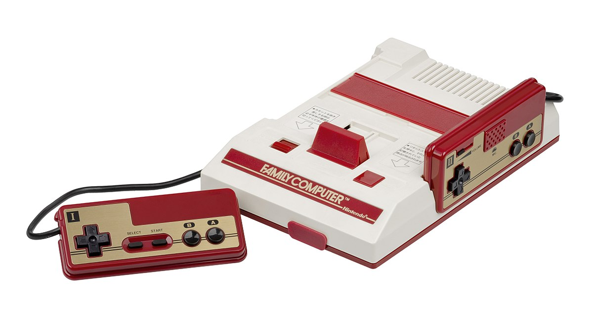
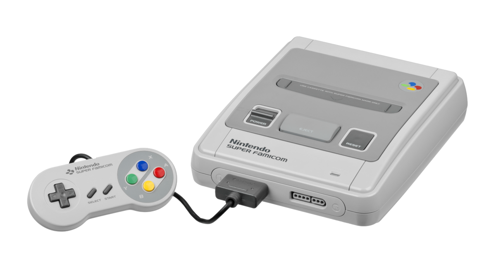
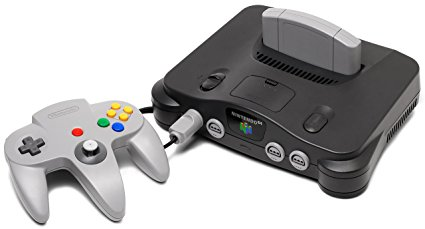
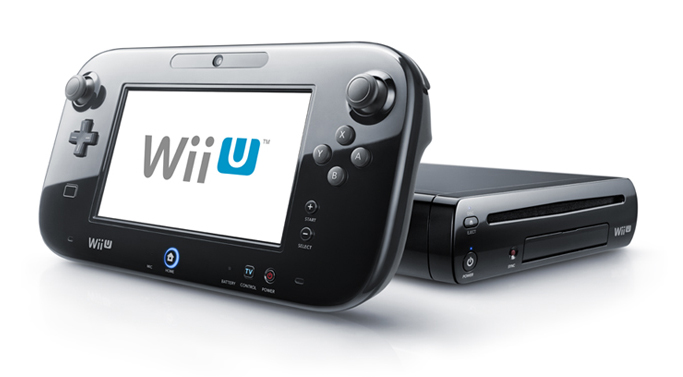
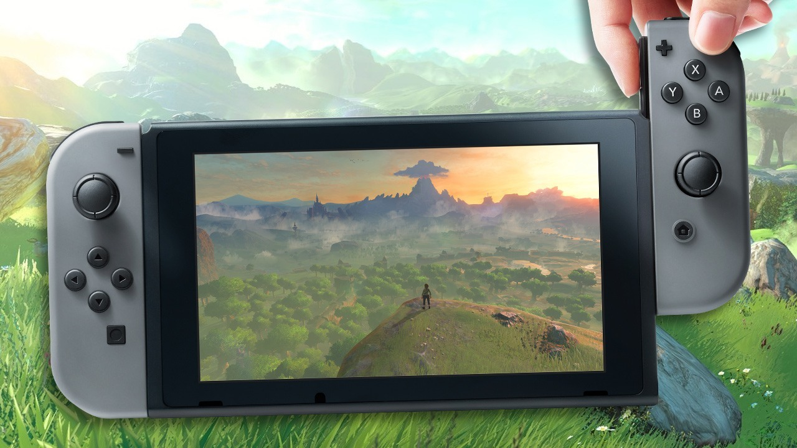

A Brief History of Nintendo's Home Game Consoles
Here you will find a list of all the other consoles Nintendo has made over the years. A facsinating library of revolutionary hardware and some half baked and poorly implementd concepts and everything in between. One thing you can never accuse Nintendo of being is boring! For Ninteno's handheld consoles, click this link.
The NES/Famicom
The Japanese Famicmom. Controllers are hardwired into the unit. The hardware was siginificantly redesigned for the western markets
The great grandaddy of the Nintendo family. This thing basically resurected and entire industry after the gaming crash of 1983 in America. It also solidified its position in it's native Japan. It had relatively little impact in Europe though, where affordable home computers reigned as king. This is where legendary developers like Capcom and Konami cut their teeth with franchises like Castlevania, Megaman, Contra/Gryzor/Probotector, Goemon, Metal Gear and more appearing on the system. It's greatest game is arguably 1988's Super Mario Bros 3, which along with Super Mario World, is arguably the greatest 2D platformer of all time.
The SNES/Super Famicom
Released in 1990 in Japan and 1991 in north America and Europe, the SNES is what this site is all about! It comes in two different models, the cute little Japanese and European model, and the industrial, angular gray and lavander American model. Why was it redesigned for America? While Nintendo have never outright stated the reason why, it was probably an attempt to make it look less like a toy, and more like a sophisticated piece if tech hardware. Dodgy 90's aesthetic sensabilities aside, the NTSC US model runs at 60hz, just like the Japanese model, whereas those of us in Europe were stuck with 50 hz on our pal tvs. As a result, ports of games to Europe at the time usually run substantially slower than their American or Japanese counterparts. For this reason, I wouldn't really recommend hunting down the pal console or pal games unless you have very specific nostalgia for the slower European conversions of the day. This means buying the ugly US model for full speed English language games, or buying the cuter Japanese model, but dealing with the language barrier! No matter which version you go with, a fantastic library of games awaits those who dive into the Super Nintendo back catalog!
The Japanese and European SNES model
The Nintendo 64
Fondly remmebered for many reasons, despite it's blurry, brown, low poly games with often dodgy framerates! This console delievered some of the most revolutionary games in history, first and foremost Super Mario 64, The Legend of Zelda: Ocarina of Time and Goldeneye. It was also the multiplayer gamers console of choice in the late 90s, with 4 controller ports built into the console delivering some of the finest local multiplayer nostalgia can buy. Rare delivered it's best games on the N64, including the Mario rivalling (beating?) Banjo Kazooie, the cathartic and original building destruction sim, Blast Corps, scattershot Conker's Bad Fur Day, and some disappointing bloated collectathons in Donkey Kong 64 and Banjo Tooie. Third party support was hurt by Nintendo's decision to go with cartridges, which were more expensive to produce and had less memory than CDs, but on the plus side, had almost no load times.
The Nintendo 64. The odd trident shaped controller was an enormous contribution to the industry
The Gamecube
A slightly odd one. It really didn't have any hook or gimmick. It didn't do anything new, though it did have a charmingly oddly chaped controller. Contrary to popular belief, it actually had pretty good third party support, better than any subsequent Nintendo console, with all the main EA, Activision, Capcom and Sega output of the day landing on tiny Gamecube discs. Nintendo's first party output was a mixed bag. Super Mario Sunshine arrived late, with half the levels of Super Mario 64, and is often considered the worst 3D Mario platformer. I'm inclined to agree. The Legend of Zelda: Wind Waker divided fans with it's art style, but proved to be acharming experience throughout. Unfortunately it a rushed development cycle, and several dungeons were cut from the game, with some obvious and tedious padding taking its place. F Zero arrived with it's best entry ever, Sega developed F Zero X. Starfox crashed landed on Gamecube with the middling Namco developed Starfox Assault. American studio, Retro Studios was handed the Metroid license and surprised everyone with a beautiful, atmospheric and polished first person adventure, the first Metroid game since 1994's Super Metroid. While fondly remembered, the Gamecube was a minor flop for Nintendo, shifting only 20 million consoles.

The adorable Gamecube! What you can't see is the carrying handle at the unit's back. A very odd design choice...
The Wii
After the relative failure of the Gamecube, Nintendo bet the house on the Wii's revolutionary motion controller, the Wii remote. The theory was that we could control games by swinging and waving our arms and our on screen avatars accurately replicating our movements. Anyone who played the Wii will know this wasn't quite what happened. While Wii Sports gave a decent illusion of motion control, people quickly realised that the game wasn''t actually accurately detecting their movement, and rather than carefully aiming, timing and angling your tennis shots or sword swipes, you could achieve identical results by simply flailing (or waggling) your limbs. Half baked motion controls marred a tonne of Wii games, and Nintendo's choice to go with underpowered hardware made third party ports from the PS3 and XBox 360 virtually impossible. Nintendo eventually released the WiiMotion+, an add on that plugged into the bottom of the remote and basically made the Wii remote work like it should have, but it came late in the sytem's life and was only really implemented well in a handful of games, notaby Zelda: Skyward Sword, Red Steel 2 and Wii Sports Resort. Sony and Microsoft also tried to cash in on the motion control craze, but it appears now that it was a passing fad, with none of the big three showing much interest in the technology these days.

The Wii, basically an overclocked Gamecube. A hatch on the side opens up to reveal Gamecube controller ports and memory card slots
The WiiU
Oh dear... While the Gamecube was a moderate failure, the WiiU truly bombed. Following from the Wii, Nintendo decided that gimmicky controllers were the way to go. Once again they went with underpowered hardware compared to the competition. This time Nintendo decided to put a capacitive touch screen in the controller. Unfortunately they didn't really have much in the way of ideas for this second screen besides maps and menus. Not exactly thrilling stuff... Whats more, the few games that required looking at two screens, like Star Fox 0 were very frsutrating to play. It turns out people can't look at two screens at the same time, and constantly darting your eyes from one screen to another isn't fun! Who would have guessed. A truly bad idea, poorly implemented. The WiiU nonetheless had some pretty nice games, Super Mario Maker, Mario Kart 8, Captain Toad's Treasure Trackers, a nice Wind Waker remake, Super Mario 3D Land, and the wonderful new IP, Splatoon!
The WiiU both looked like a WiiU, and it's name was very similar, confusing some consumers who thought it was merely an add on for the Wii
The Nintendo Switch
After two successive console generations where Nintendo hardware was a generation behind the competition, limiting third party support, and gimmicky controllers, would Nintendo continue on this path? Kind of?! While the Switch may be a generation behind the other home consoles, it is a fully functional handheld, and as a handheld, it is the most capable dedicated gaming handheld ever released! Launching with the unmissable Breath of the Wild, and continuing to deliver heavy hit after heavy hit in it's first year with Mario Kart 8, Splatoon 2 and Mario Odyssey, the Switch has delivered amazing home console experiences and simply unrivalled and seamless portable gaming experiences, fully delivering on it's handheld/home console hybrid concept. Compared to even the base PS4 and X Bbox 1 models, it's a generation behind, but when you first emerge from the Shrine of Awakening in Breath of the Wild and step out onto the great plateau and clap your eyes on the stunning vista, you will instantly be converted!
